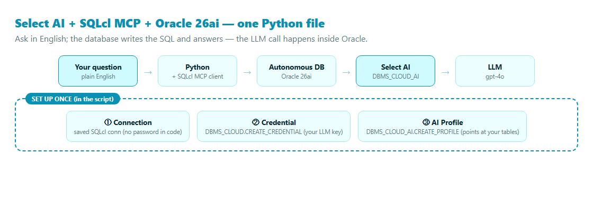
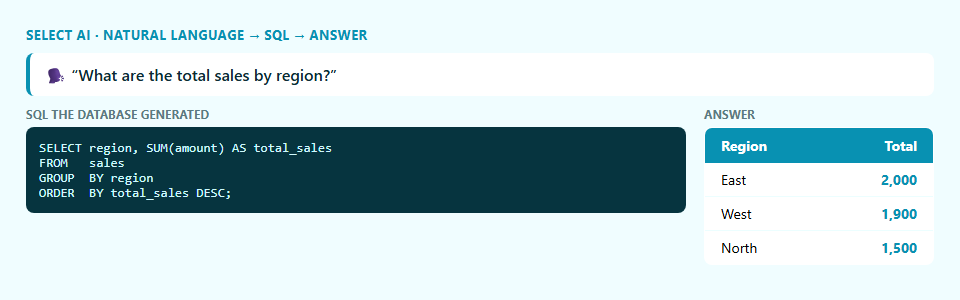

Connect, set up Select AI, and ask your database a question in plain English — start to finish in a single script.
Three Oracle 26ai pieces, wired together in one short Python file: the SQLcl MCP Server for a safe connection, Select AI so the database can turn English into SQL, and your Autonomous Database holding the data. The neat part — the LLM call happens inside Oracle, so your app code never touches the model.

No password in the script. Save a connection once with SQLcl, then the MCP server uses it:
sql /nolog
SQL> conn -save DEBATE -savepwd <user>@<adb-tns-alias>In Python, a few lines open the MCP session and run SQL:
params = StdioServerParameters(command="sql", args=["-mcp"], env=dict(os.environ))
async with stdio_client(params) as (read, write):
async with ClientSession(read, write) as s:
await s.initialize()
await s.call_tool("connect", {"connection_name": "DEBATE"})
await s.call_tool("run-sql", {"sql": "SELECT USER FROM dual"})Select AI needs two database objects: a credential holding your LLM key, and a profile that tells it which tables it may use.
-- credential (your OpenAI key, stored safely in the DB)
DBMS_CLOUD.CREATE_CREDENTIAL(
credential_name => 'OPENAI_CRED', username => 'OPENAI', password => '<api-key>');
-- profile (which provider, model, and tables Select AI may read)
DBMS_CLOUD_AI.CREATE_PROFILE(
profile_name => 'SALES_AI',
attributes => '{"provider":"openai","credential_name":"OPENAI_CRED",
"object_list":[{"owner":"DEBATE","name":"SALES"}],"model":"gpt-4o"}');
DBMS_CLOUD_AI.SET_PROFILE('SALES_AI');🔑 One-time admin grant. The database must be allowed to reach the LLM endpoint. Your DBA runs this once (the script prints it for you if it's missing):
BEGIN
DBMS_NETWORK_ACL_ADMIN.APPEND_HOST_ACE(
host => 'api.openai.com',
ace => xs$ace_type(privilege_list => xs$name_list('http'),
principal_name => 'DEBATE', principal_type => xs_acl.ptype_db));
END;
/Now the use case. One call, and the database writes the SQL and runs it:
SELECT DBMS_CLOUD_AI.GENERATE(
prompt => 'What are the total sales by region?',
profile_name => 'SALES_AI',
action => 'runsql') -- or 'showsql' to see the SQL, 'narrate' for prose
FROM dual;
DBMS_CLOUD_AI.GENERATE run on Oracle 26ai — ask in English, the database writes the GROUP BY and returns the answer.pip install -r requirements.txt
copy .env.example .env # OPENAI_API_KEY + ORACLE_MCP_CONNECTION
python select_ai_mcp.py # connects, sets up Select AI, asks the questionThe script is self-contained: it connects, builds a tiny sales table, creates the credential and profile, and asks the question — and if the network grant is missing, it prints exactly what your DBA needs to run.
📦 Full code on GitHub: github.com/khadayatepa/select-ai-mcp
A learning demo.